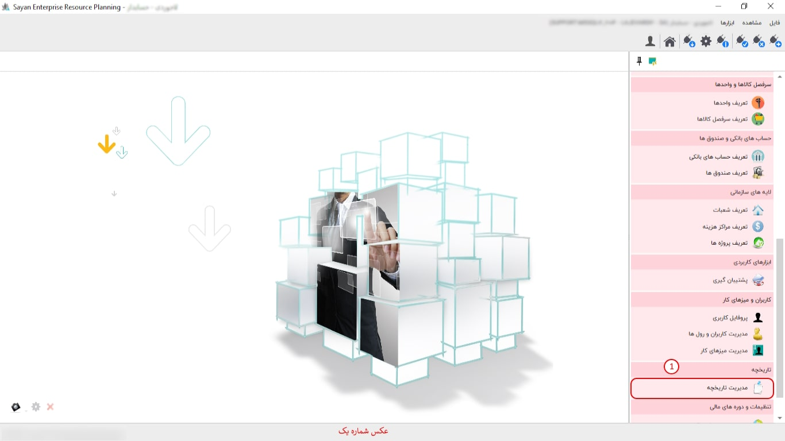
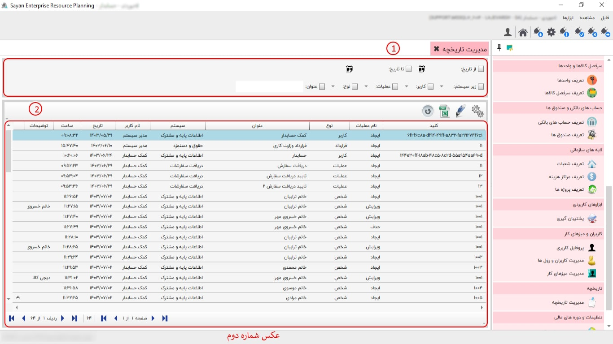
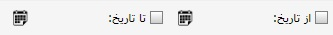
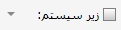
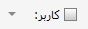
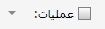
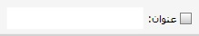

در سیستم اطلاعات پایه و مشترک با کلیک بر روی گزینه ی مدیریت تاریخچه صفحه ی زیر نمایان می شود:
برای ادامه مطلب به تصویر شماره دو مراجعه نمایید.
-کادر شماره یک:
با استفاده از این فیلتر می توانید اقلام مورد نظر در یک بازه ی زمانی را در کادر شماره ی دو مشاهده کنید.
در این قسمت می توانید زیر سیستم مورد نظر خود را فیلتر نمایید.
با فعال کردن این گزینه می توانید کاربر مورد نظر خود را فیلتر کنید.
با فعال کردن این گزینه می توانید عملیات مورد نظر خود را فیلتر کنید.

با استفاده از این فیلتر می توانید نوع عملیات مورد نظر خود را تعیین کنید.
با فعال کردن این فیلتر می توانید عنوان مورد نظر خود را جست و جو کنید.
-کادر شماره دوم: